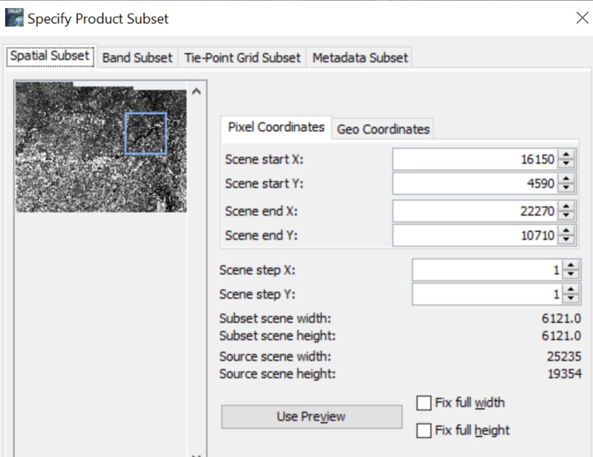
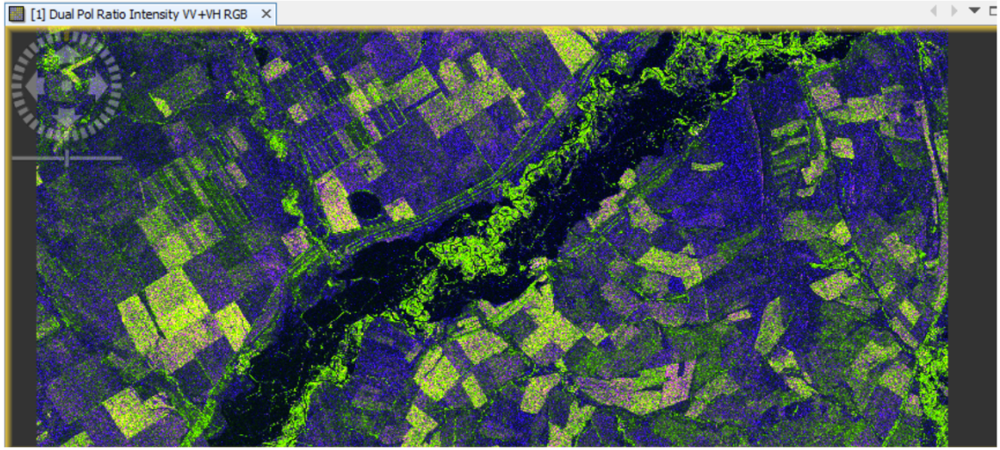

Class 5 SAR Data Processing
Radar data is an unusual type of data for physical geographers. Despite this, they can be useful for a number of tasks. This is due to the advantage of radar imagery to penetrate through clouds and the ability to survey at night, unlike optical imagery. SNAP is one of the few free software capable of processing radar data. Moreover, SNAP integrates many tools that are sharpened specifically for processing Sentinel-1 open data, making it easier.
In this tutorial, you will learn about radar data sources, radar image preprocessing steps, and an example radar data application.
5.1. Sources of radar data
The Sentinel-1 program, curated by the European Space Agency, is the only active constellation with open data. The main resource containing Sentinel-1 images is the Copernicus Data Space Ecosystem. However, in this task we will use an alternative resource — Alaska Satellite Facility.
Within the framework of the assignment we will estimate the area covered by flooding in the city of Orenburg and its vicinity in April 2024. This will require a summer image of the area as well as during the flood. Unfortunately, images for this area are available up to and including 2021, as the data for this area was supplied by Sentinel-1B satellite, which broke down in December 2021, but Sentinel-1A was imaging the flood as part of the International Charter on Space and Major Disasters (more details can be found in open sources).
To download the imagery to ASF:
- Draw an extent of the area of interest (Orenburg city)
- In Filters section select time range (2021-2024). Additionally, you can use the Seasonal Search option to select the desired months (June-August 2021, April 2024).
- In the File Type section, you should select the dual polarization amplitude data (GRD-HD). SLC data is used for interferometric and polarimetric processing and will also be fine, but for the purposes of our task it will suffice
- In the Path and Frame Filters section you can select the desired Path and Frame of the image. We will need an April flood image that has Path = 86 and Frame = 165. A summer shot might have Path = 35 and Frame = 420.
Alaska Satellite Facility: Search Filters
The selected pictures will appear in the downloads. If you have difficulties, you can use the links to download them:
5.2. SAR Image pre-processing
Open images in SNAP and display one of polarizations of any image in the window. Note that the image is not oriented relative to the sides of light - it is recorded in the coordinate system of the radar imagery. To correlate objects on the image, you can use the World View tool, which will display the image extents. Also, geographic coordinates of the point where the cursor is placed are shown in the lower right part of the window. Find the city of Orenburg on the image (it will be the brightest in the central part of the image), and then the flooded areas (dark areas) next to it. Remember the pixel numbers in the corners of the area of interest (flooded areas) - we will need them when cropping the image.
Before working with radar data, the following steps are necessary:
Raster Subset. Select any area that includes the flooded area so that the number of pixels in the X and Y axes is approximately 5000-6000 (to speed up processing). Enter X coordinates of the leftmost and rightmost pixels, topmost and bottommost pixels in the coordinate input fields, or use the floating window. After cropping the first image, open the second image as well and find the area you cropped, then perform the same procedure with the second image.
Example of Raster Subset Parameters
Cropped pictures are stored in RAM. Examine the cropped slices and their extents in World View again and make sure you have taken the same area, then the slices can be saved to memory.
After cropping the images, you can open all the channels of the slice. Open the RGB composite (click on the image in Product Explorer - Open RGB Image Window) and display the suggested channel combination in the window. Note which data is located in which channels. Then in the window try to identify different objects on the image.
Example of Raster Synthesis in VV-VH-VV/VH
Further work with only one of these two images. All tools for working with radar images are located in the Radar section
- Apply Orbit File (Radar - Apply Orbit File). This procedure is necessary to make the image georeferencing more accurate. Try not to skip this step. If an error occurs when loading the orbit file, restart the program. if you have not installed the latest version of the application, then install the latest one;
- Remove Thermal Noise (Radar - Radiometic - S1 Thermal Noise Removal). This procedure removes radio noise so that the image is clearer. Leave all settings at their defaults and make sure the Remove Thermal Noise checkbox is active;
- Radiometric Calibration (Radar - Radiometic - Calibrate). As a result you should only get Radar cross section data (sigma0 band), the other checkboxes should be deactivated. Also make sure that both input and output channels are fed in both polarizations. ;
- Speckle noise filtering (Radar - Speckle Filtering - Single Product Speckle Filter). This procedure is aimed at removing speckle noise - random intensity increases that occur when overlaying a radar signal. Various filters are implemented in the tool, and you can also adjust the floating window size and filter strength. Try using different parameters, compare the results and choose the most successful one
- Conversion from dimensionless units to decibels (Raster - Data Convertion - Linear From/To dB). A new channel with amplitude values in decibels will be created in the file.
Pre-processing of the radar image is completed
5.3. Graph and Batch processing
Image pre-processing is a standard procedure for conventional processing of amplitude radar image data. In addition, the sequential realization of the processes leaves unnecessary files. Therefore, to speed up the processing, SNAP has a graph processing option. Graph creation is available in the GraphBuilder tool (Processing menu). This allows you to automate processing and to avoid saving intermediate results.
When opened, only file read and write tools are added. Editing a graph in GraphBuilder is done as follows:
- Nodes with tools are added by PCM from the corresponding sections. Add the tools used as part of the pre-processing (without Subset)
- Sequentially connect all tools with arrows and check if the order of the processes is correct
- Select the source file in the Read section (second snapshot) and the directory where the file will be saved in the Write section, and correctly set all parameters for each tool. Start the processing
- Save the compiled processing graph so that you can use it in the future. The graph will be saved in XML format. In addition, other available graphs can be viewed in the application directory
Built Graph
The Batch Processing tool is also available in the Processing menu. With this tool it is possible to do stream processing of a set of images according to the created graph.
5.4. SAR Image pre-processing
After these manipulations two images can be merged into one multitemporal image. Radar images can be combined by orbit parameters (Radar - Coregistration - Stack Tools - Create Stack). In this case it is necessary that Initial Offset Method should be based on orbit data.
Stack Interface
As a result of merging two images, one of them will become the master image and the other will become the slave image. Display a multi-channel image in the window, where the red channel will contain the image before the flood, the green channel will contain the image after the flood, and the blue channel will contain the image after the flood. As a result, the resulting image will show flooded areas in dark red color.
Stack Result
Search the brightness values in decibels, and then mask the flooded areas by segmenting the values from the two channels. Add the resulting mask (it will appear in the masks section) to a new channel via the raster calculator.
5.5. Geocoding of SAR images
In order to georeference radar images from the survey system projection to the map system projection, it is necessary to perform geocoding procedure. In the process of geocoding the reference DEM is also used, which is necessary to eliminate geometric distortions. It is recommended to perform this operation always in the last turn, because as a result of this operation images have artifacts.
| Shiryaev M. et. al SNAP Course for Specialists. Moscow: Department of Geography, MSU, 2024. |